Date: November 14th :
Our first Trip✨
Ye hamara first trip tha, isme jo dar tha bhai shaab.. kahi pakde na jaye , kahi koi dekh na le, time pe ghar aa payenge ya nhi etc etc. Firbhi hamne himmat karke jane ka socha. and hum darte darte kisi trah train pe baithe. And sabse accha chiz ye hua ki ham akele mai seat mil gaya jaha aspas koi nhi tha. Yaad hai pahle hum alag alag baithe the taki koi sath mai na dekh le. Fir jab train khula to sath baithe mastttt.
Uske baad apne makup karna suru kiya and fir...apne mera bhi make up kar diya😅
Fir dher sari gappe marne ke baad hum gaye gate ke pass... And ufff kiya moment tha wo.... Train speed mai hai and side mai biwi... Hayeeee.... Fir hamne dher sari pics liye udhar.....
Fir hum jake baith gaye... And thodi der baad hmara stop aagya hum utar gaye... And utarte hi hamne hamara first photo liya station pe...
Uske baad hum kiya mast sidhi pe ek dusre ka haat pakad ke chal rhe the.... And maze kar rhe the....
Uske baad hum nikle bahar and hame bhuk lagi thi to humne chole bhatore khaye..
Fir humne auto kiya and udhar humne pics uthaye....
Fir hum gaye park jo ki band tha... But humne himmat dikha ke bhaiya se baat ki and then....
Fir waha se hum thoda bhatke ki kaha jaye... Fir hum gaye Zudio jaha apne dher Sare kapde try kiye...
Fir hum waha se gaye biryani khane. Apne mujhe aone haat se biyani khili...uff hayeee...kiya sukoon tha wo.
Then hum return karne ke liye vande bharat train pe gaye....hmara first Vande Bharat exprience kiya humne...
And isi ke sath humne apni 1st trip complete karli.
Date: December 4th :
Our Second Trip✨
Ye hamara second trip tha, isme hum dono kaafi comfortable the kyuki ab hame pata chal chuka tha ki kaise jana hai , kiya karna hai.
Is trip mai hamare sath hamara beta bhi tha. Hum bahut jada excited the..then as usual apne makup kiya and mere ko bhi kuch kuch lagaye and apne fir ek cute si photo uthayi apni...
Hum mast jacket udh ke baith gaye then hamare bete ne apne iphone ka jalwa dikate huye kiya gazab ka pics uthaya..hayee....
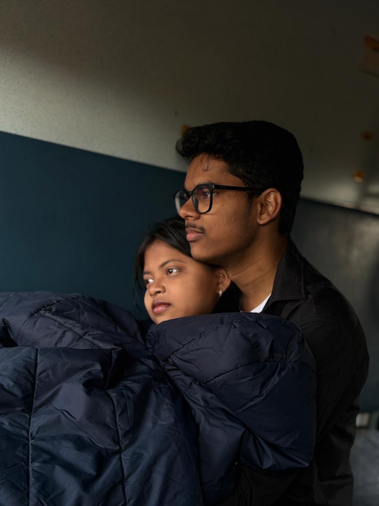
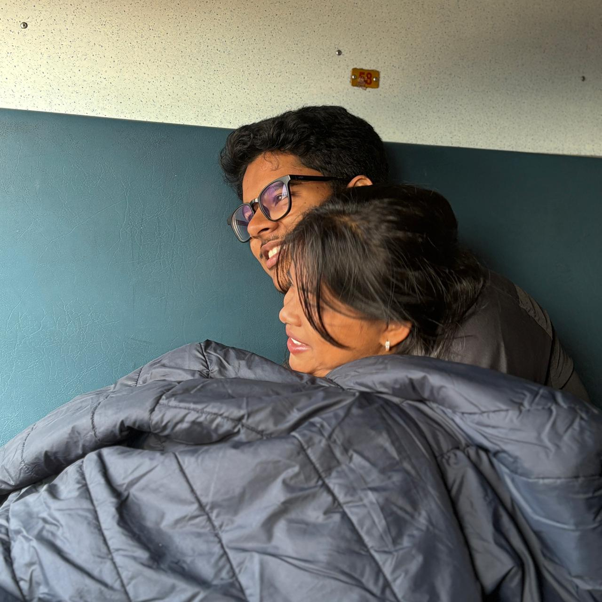
Fir hum train se utar ke station ke bahar jaa rhe the raste mai masti karte hue...
fir hum station se nikalte hi chai piye then sidha gaye mall. jaha humne dher sari mastiya ki photos uthaye video banaye...
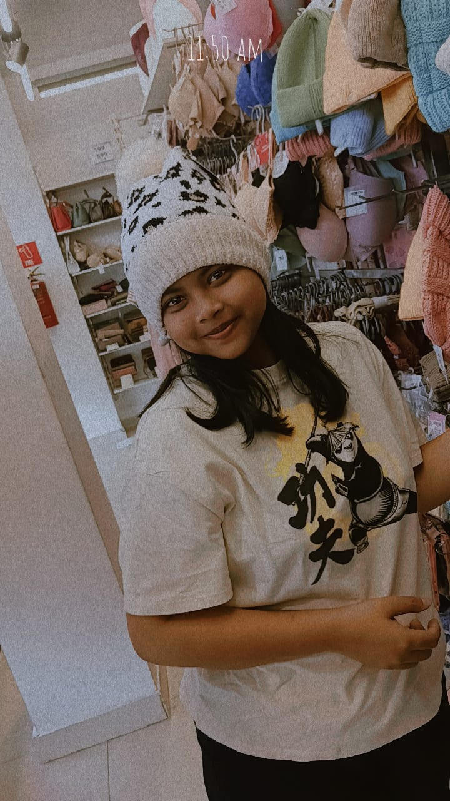
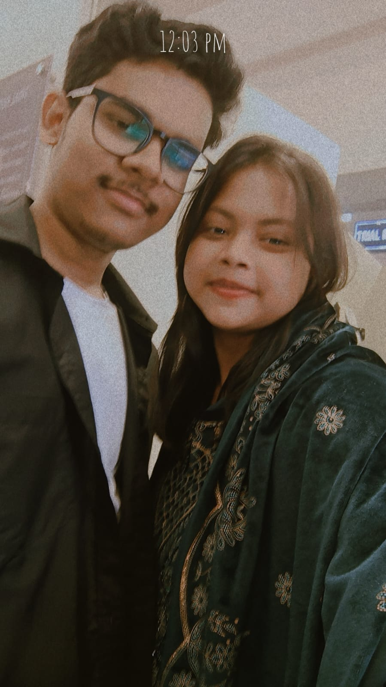
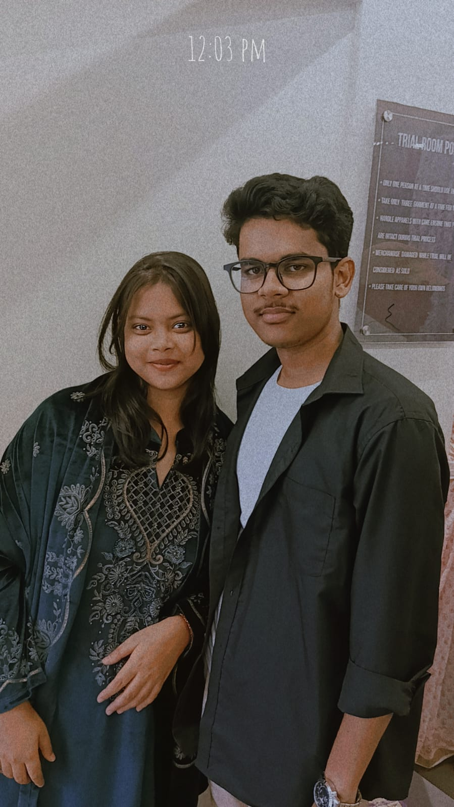
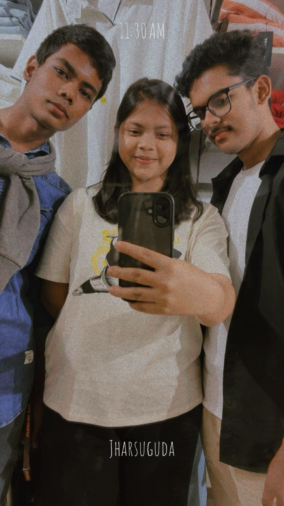
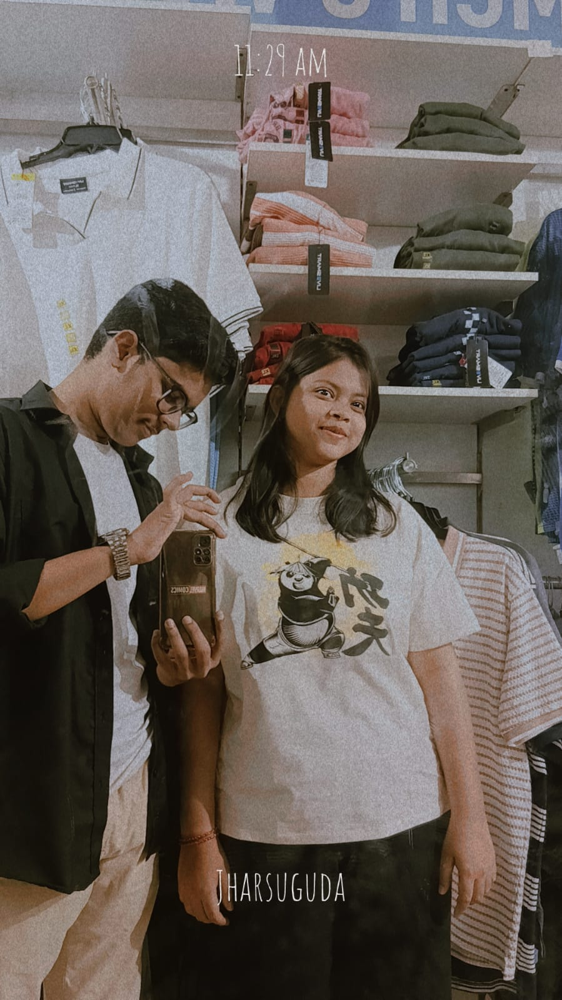
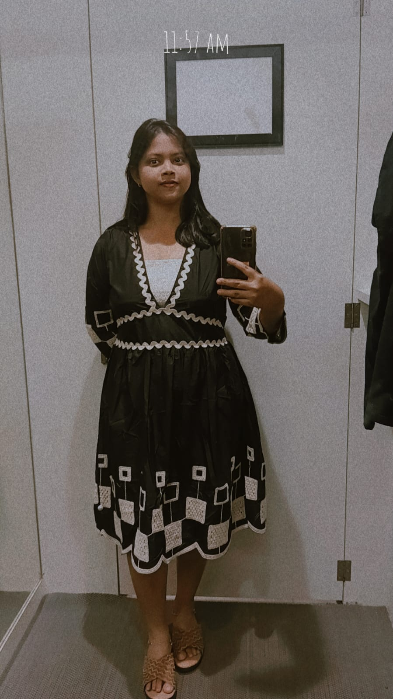
Fir humne udhar shocks kharda kunki apka pair chappal se chil raha tha...and maine pahnaya usko...😙😙
Fir hum udar kha pike wapis train mai aa gaye return jane ke liye...And udhar hame mast RAC wali seat mili hui thi...Udhar mast hum comfertable hoke baithe and gappe marne lage and tabhi nitish ne kayi sare photos uthaye...
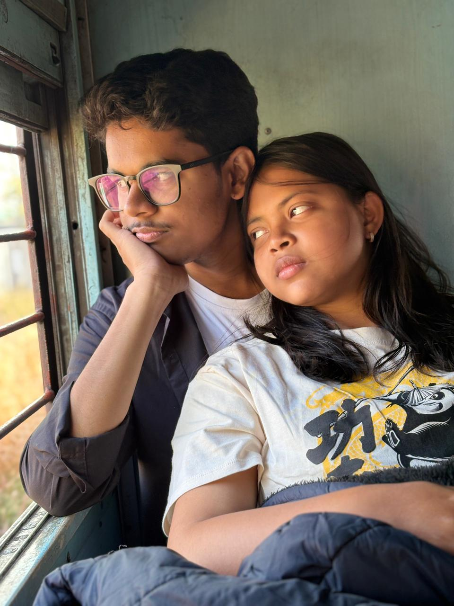
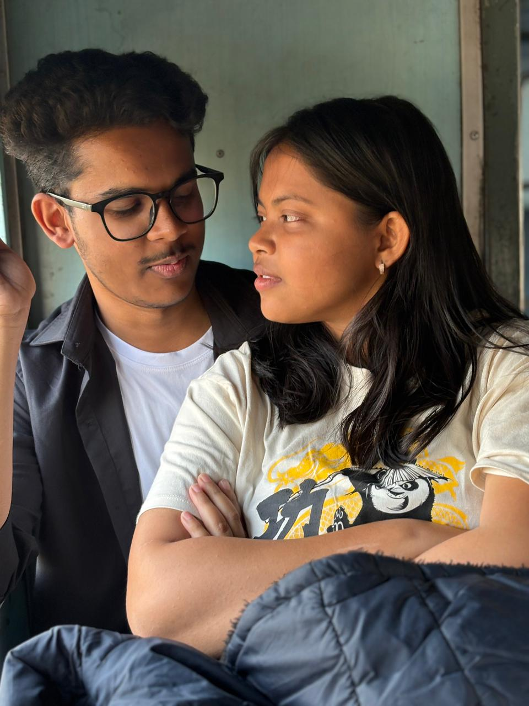
And isi ke sath humne apni 2nd trip bhi complete karli.
Date: December 9th :
Our Third Trip✨
Ye hmara unplanned trip tha. Matlab station jake decide kiya humne ki janan hai. Usdin ispat train khadi thi uske nikalne ka kuch ata pata nhi tha. mai apko bag pakda ke bhaag ke gaya ticket lene and fir bhagte hue aya tab tak train khul chuki thi , mere ko lag rha tha ki train speed ho rhi hai aap nhi chadh paoge but aap hi pahke chadh gaye and mai shock ye kaise kar liya isne....fir hum jake baithe and mai bahut thak gaya tha aap mere ko pura pakad ke baith gaye...Then humne comfertablehoke baithe and dher sari gappe mari...And hum is baar ek dusre mai itna khoye hue the ki photo click karne ka yaad hi nhi rha, is trip pe humne ek bhi photo nhi uthaya...then hum udhar utre and jake chole bhatore khaye par is baar maine khilaya apko...wo khane ke baad hum turat biryani khane gaye and udhar bhi maine apko khilaya...And yaad hai usdin hum jo bhi chord ke ja rhe the wo gum ho ja rhi th...humne bottle chorda tha jisko dekhne gaya aur nhi mila fir mere dimag mai aya ki aree maine apni biwi ko chord ke aya hai...dar gaya tha mai pura fir daudte hye gaya and jaise aap dikhe jake hug kar liya....Then hum fir return aa gaye dher saari gappe marte hue train mai.
isi ke sath humne apni 3rd trip bhi complete karli.
Date: December 18th :
Our Fourth Trip✨
So this is our last trip of the year 2025. We planned to go to rourkela agar hamari ane wali train late hue to. kunmi hmara pura trip uspe dependent tha.
Hum asusal train mai baithe apne dress change kiya then hum gappe mare and ek random pic liye..
Fir humne decide kiya rajganpur mai utarne ka. Hum udhar utre and udhar bahut sochne ke baad trend gaye jaha apne dher sari pics li
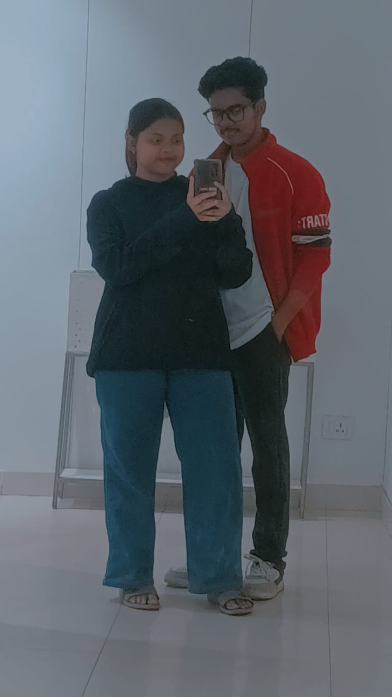
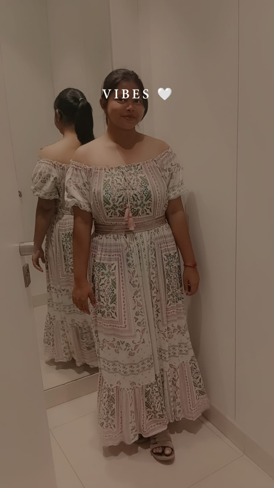
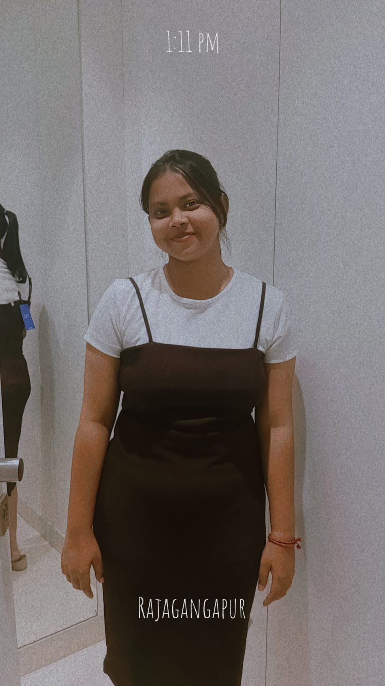
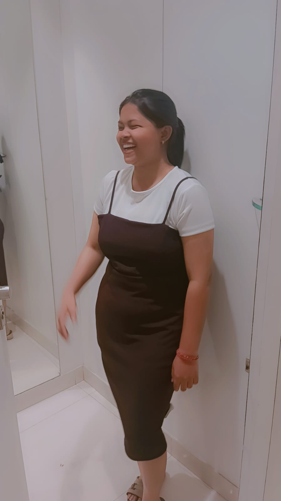
Fir waha se nikal ke hum ek cafe gaye jaha humne pestry and pizza khayi and udhar humne ek video record kiya...
Fir hum waha se nikal ke station gaye and udhar bahut der wait karna pada tabhi hum mast ek jgha baithe hasi mazak kiye then humara train aya aur hum baith gaye.
Train mai chardne ke baad hame yaad aya ticket ka, jo fati hai hamari bhai shaab uske baad....then hamne kisi tarah jigad karke ticket nikala then fir thoda relax hue and fir hum gate ke pass hi gappe marte hue sambalpur aa gaye.
isi tarah hamari saal ki akhiri trip bhi complete ho gyi🤗🤗.
So this is the end of our journey together this year.
We’ve shared so many beautiful moments and memories on these trips.
I wish and hope to go on more trips with you this year and make so many more memories together.
And as you know, I love you from the bottom of my heart ❤️.
So please take care of yourself and be happy always.
and mai to hu hi apka khayal rakhne ke liye and hamesha khus rakhne ke liye😙.
— Always Yours
Buddhu...